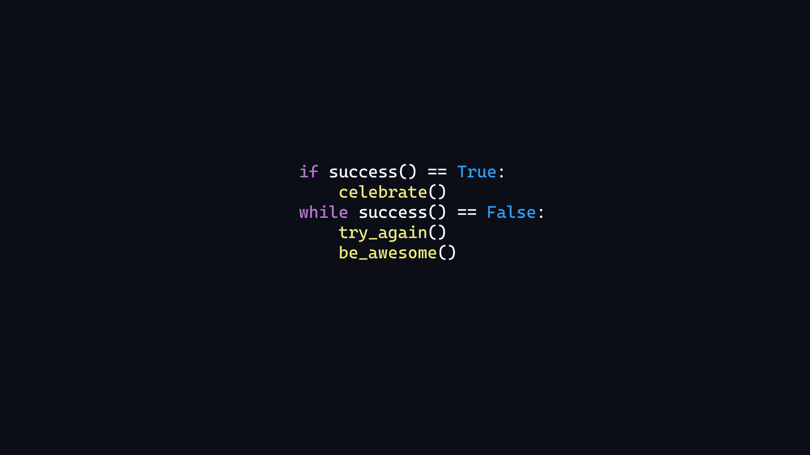

Hobby 01
Voice Acting

Voice acting is a great way to get away from the stress of life, especially when you do it with your friends. I love watching a character come to life because they are given a voice, it's honestly a pretty special feeling.
I have done a few fan dubs and have actually voice acted for a custom character once before. It was very entertaining and almost fills you with a sense of pride to see your voice emitting from this creation.
Hobby 02
Programming

Programming as been a bit of a fickle interest for me, mainly because I usually learn on sporadic bursts of inspiration. The very few things I have tried "Programming" have been: Video game creation, Website building, and app designing.
I haven't been officially diagnosed with ADHD but I feel that it's a pretty big factor in learning experiences for me. Either I'll hyper focus or I'll completely lose all interest in a subject. So while I love to program, I often find it difficult to keep consistancy.
Hobby 03
Animation

Animation is an interesting topic for me because it falls in very close with my love for game design. I am not very great at building the game itself, but I do enjoy animating whilst my friend actually does all of the complex stuff.
Hobby 04
Learning Japanese

I find the Japanese language quite fun and rather elegant. I don't take much interest in the culture but I figure it'd be important to learn it anyway, just incase I happen to speak with a native. I do quite enjoy the entertainment such as: Movies, cartoons, books, and games.